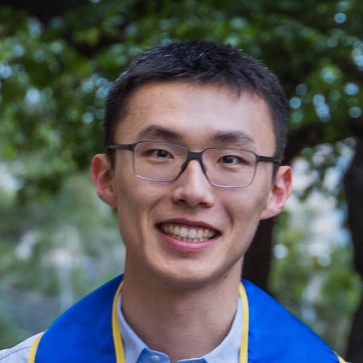
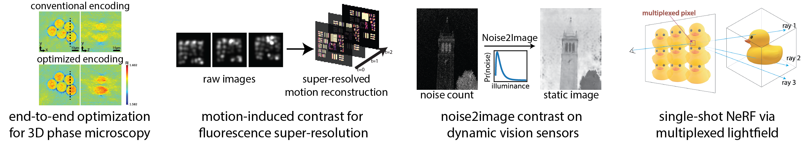
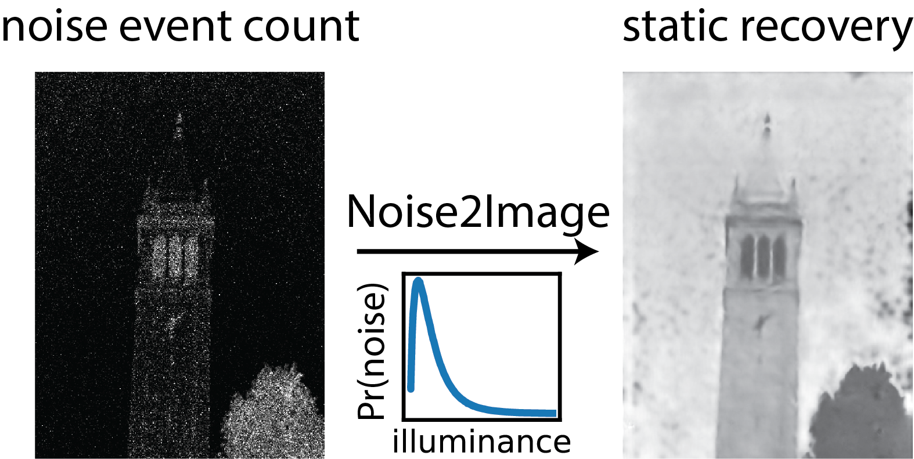
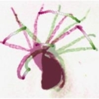
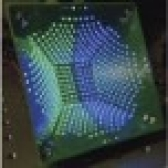
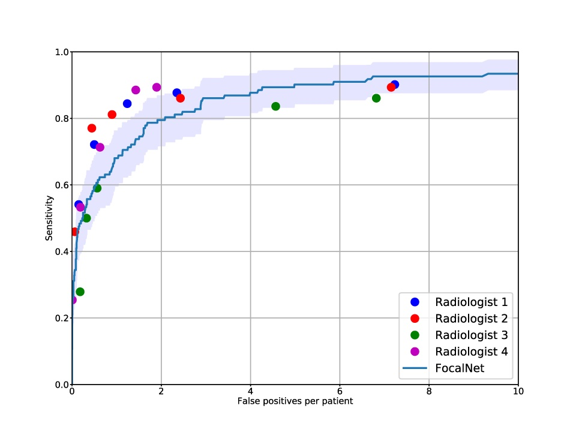
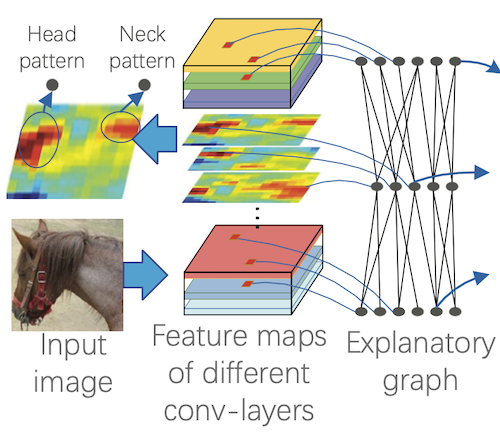
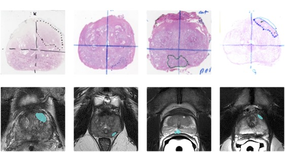

|
Ruiming Cao I am a research scientist in Adobe’s NextCam team led by Marc Levoy. I obtained my Ph.D. from UC Berkeley, where I was advised by Laura Waller and supported, in part, by Siebel Scholarship. I was also affiliated with the Berkeley Artificial Intelligence Research (BAIR). I was a research intern in Google Research in 2021 and an optical scientist intern in Meta Reality Labs Research in 2022. I received M.S. in Computer Science from UCLA in 2019, where I was advised by Kyung Hyun Sung and Fabien Scalzo. I received B.S. in Computer Science and Applied Mathematics from UCLA where I worked with Song-Chun Zhu. Email / Google Scholar / Twitter / GitHub |
 |
{kind=link}
ResearchMy research focuses on motion modeling and dynamic imaging. I jointly develop the optical system hardware and the computational methods to enhance our capabilities for observing and analyzing fast and complex dynamics. I work on various image modalities, including digital photography, optical microscopy, medical imaging, and most recently cryo-ET. Optical sensing methods for dynamic imaging. I develop optical sensing hardware by enhancing signal encoding through dynamic sensors and novel contrast mechanisms, specifically designed for imaging moving samples. My work optimizes imaging hardware designs to improve signal quality and reduce acquisition time. Additionally, I have pioneered theoretical noise analysis for dynamic vision sensors, leveraging their unique properties for new applications.
 Parsing dynamics and inverse problem optimization with machine learning. I work on inverse problem optimization algorithms that parse spatiotemporal correlations from unlabeled data, overcoming the limitations of frame-by-frame processing. The neural space-time model significantly enhances temporal resolution, image quality, and multi-modal alignment in image reconstruction. Furthermore, I am developing a large vision model for cryo-ET data processing tasks. |
Publications |
|
 |
Noise2Image: Noise-Enabled Static Scene Recovery for Event Cameras
Ruiming Cao*, Dekel Galor*, Amit Kohli, Jacob L Yates, Laura Waller Optica, 2025 PDF / Code / Website Event cameras capture changes of intensity over time as a stream of ’events’... We find that, in the photon-noise regime, these noise events are correlated with the static scene intensity. |

|
Sample motion for structured illumination fluorescence microscopy
Ruiming Cao, Guanghan Meng, Laura Waller Optics Letters, 2025 PDF / Code We propose an alternative approach using a static speckle illumination pattern and relying on inherent sample motion to encode the super-resolved information in multiple raw images. |

|
Neural space–time model for dynamic multi-shot imaging
Ruiming Cao, Nikita S Divekar, James K Nuñez, Srigokul Upadhyayula, Laura Waller Nature Methods, 2024 PDF / Blog / Code / Website We propose a neural space-time model (NSTM) that jointly estimates the scene and its motion dynamics, removing motion artifacts and resolving sample dynamics. |
|
 |
Space-time reconstruction for lensless imaging using implicit neural representations
Tiffany Chien, Ruiming Cao, Fanglin Linda Liu, Leyla A Kabuli, Laura Waller Optics Express, 2024 We propose using an implicit neural representation to model dynamics and act as a computationally tractable and flexible space-time prior for lensless imaging. |

|
Multi-modal deformable image registration using untrained neural networks
Quang Luong Nhat Nguyen, Ruiming Cao, Laura Waller arXiv preprint arXiv:2411.02672, 2024 We propose a registration method that utilizes untrained neural networks with limited representation capacity as an implicit prior to guide for a good registration. |
|
 |
Fast quantitative phase imaging with an LED array microscope using a perturbative approach
Kuan-Chen Shen, Ruiming Cao, Michael Unser, Laura Waller, Jonathan Dong Unconventional Optical Imaging IV (SPIE), 2024 Video We revisit DPC as a perturbative approach for high-resolution phase imaging with a minimal number of images. |
|
Speckle flow structured illumination microscopy for dynamic super-resolution imaging
Ruiming Cao, Fanglin Linda Liu, Li-Hao Yeh, Guanghan Meng, Laura Waller High-Speed Biomedical Imaging and Spectroscopy VIII (SPIE), 2023 Video Hitachi High-Tech Best Presentation Award Speckle Flow SIM uses a fixed speckle-structured illumination to encode super-resolved information into measurements and a neural space-time model to exploit temporal redundancy. |
|
|
Speckle Structured Illumination of Dynamic Samples with a Neural Space-time Model
Ruiming Cao, Guanghan Meng, Laura Waller Computational Optical Sensing and Imaging (COSI), 2023 PDF / Video Best Student Paper Award We propose a structured illumination microscopy (SIM) method, Speckle Flow SIM, that uses static speckle illumination with a dynamic sample. |
|

|
Self-calibrated 3D differential phase contrast microscopy with optimized illumination
Ruiming Cao, Michael Kellman, David Ren, Regina Eckert, Laura Waller Biomedical Optics Express, 2022 PDF / Code We present a practical extension of the 3D DPC method that does not require a precise motion stage for scanning the focus and uses optimized illumination patterns. |

|
Dynamic Structured Illumination Microscopy with a Neural Space-time Model
Ruiming Cao, Fanglin Linda Liu, Li-Hao Yeh, Laura Waller ICCP, 2022 PDF / Video / Code We propose Speckle Flow SIM, which uses static patterned illumination with moving samples and models sample motion to reconstruct dynamic scenes with super-resolution. |
|
 |
Performance of Deep Learning and Genitourinary Radiologists in Detection of Prostate Cancer Using 3-T Multiparametric Magnetic Resonance Imaging
Ruiming Cao, Xinran Zhong, Sohrab Afshari, Ely Felker, Voraparee Suvannarerg, Teeravut Tubtawee, Sitaram Vangala, Fabien Scalzo, Steven Raman, Kyunghyun Sung Journal of Magnetic Resonance Imaging, 2021 |
|
 |
Mining interpretable AOG representations from convolutional networks via active question answering
Quanshi Zhang, Jie Ren, Ge Huang, Ruiming Cao, Ying Nian Wu, Song-Chun Zhu IEEE TPAMI, 2020 |
|
|
Extraction of an Explanatory Graph to Interpret a CNN
Quanshi Zhang, Xin Wang, Ruiming Cao, Ying Nian Wu, Feng Shi, Song-Chun Zhu IEEE TPAMI, 2020 |
|
 |
Deep transfer learning-based prostate cancer classification using 3 Tesla multi-parametric MRI
Xinran Zhong, Ruiming Cao, Sepideh Shakeri, Fabien Scalzo, Yeejin Lee, Dieter R Enzmann, Holden H Wu, Steven S Raman, Kyunghyun Sung Abdominal Radiology, 2019 |
|
|
Prostate Cancer Detection and Segmentation in Multi-parametric MRI via CNN and Conditional Random Field
Ruiming Cao, Xinran Zhong, Sepideh Shakeri, Amirhossein Mohammadian Bajgiran, Sohrab Afshari Mirak, Dieter Enzmann, Steven S Raman, Kyunghyun Sung ISBI, 2019 Best Paper 2nd place We propose an improved CNN to jointly detect PCa lesions and segment for accurate lesions contours. |

|
Prostate cancer inference via weakly-supervised learning using a large collection of negative MRI
Ruiming Cao, Xinran Zhong, Fabien Scalzo, Steven Raman, Kyunghyun Sung ICCV Workshops, 2019 We propose a baseline MRI model to alternatively learn the appearance of mp-MRI using radiology-confirmed negative MRI cases via weakly supervised learning. |

|
Joint prostate cancer detection and gleason score prediction in mp-MRI via FocalNet
Ruiming Cao, Amirhossein Mohammadian Bajgiran, Sohrab Afshari Mirak, Sepideh Shakeri, Xinran Zhong, Dieter Enzmann, Steven Raman, Kyunghyun Sung IEEE TMI, 2019 We propose a novel multi-class CNN, FocalNet, to jointly detect PCa lesions and predict their aggressiveness using Gleason score. |
|
|
Interpreting cnn knowledge via an explanatory graph
Quanshi Zhang, Ruiming Cao, Feng Shi, Ying Nian Wu, Song-Chun Zhu AAAI, 2018 PDF / Code |
|
Growing Interpretable Part Graphs on ConvNets via Multi-Shot Learning
Quanshi Zhang, Ruiming Cao, Ying Nian Wu, Song-Chun Zhu AAAI, 2017 PDF / Code |
|
|
Mining Object Parts from CNNs via Active Question-Answering
Quanshi Zhang, Ruiming Cao, Ying Nian Wu, Song-Chun Zhu CVPR, 2017 |
|
|
Interactively Transferring CNN Patterns for Part Localization
Quanshi Zhang, Ruiming Cao, Shengming Zhang, Mark Redmonds, Ying Nian Wu, Song-Chun Zhu arXiv, 2017 |
TeachingI was a graduate student instructor for the following courses:
|
|
Template from Jon Barron.
|